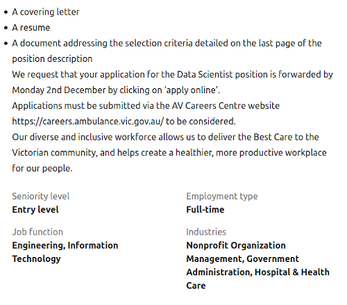
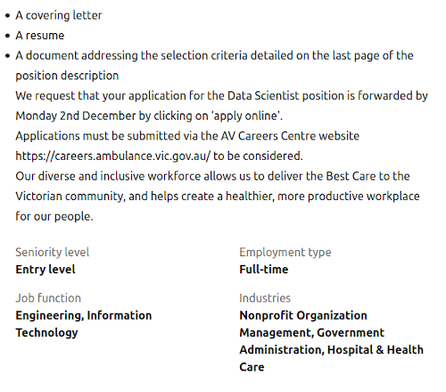
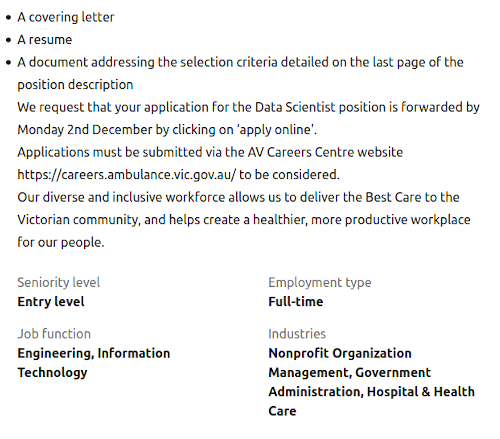

| Name: | Richard Jackson |
| Student Number: | s3829776 |
| Nationality: | United States |
Education:
2007 - Auburn University Montgomery - BSc. Psychology
2017 - NSW Ambulance - Certificate III Ambulance Communications
In my free time, I like to build plastic models known as gunpla - large model toy robots!
What is your interest in IT?
My interest in IT is mostly around computer programming. My major interest in IT began when I attended the computer program at the selective high school I attended. However, the initial spark was when my father let me have his really old Tandy Windows 3.1 powered computer on which I taught myself QBasic. My major IT experience began in high school where I learned C++ and some Java. I also learned about computer hardware and repair along with gaining a CompTIA A+ certification. After high school, I joined a computer science degree, however, I never finished it, and ended up going down a completely different path. Now, my IT experience is primarily casual and mostly fueled by gaming and my current career. My love of gaming inspired me to build my own computer which I still use to this day. My current career, while not specifically IT, has allowed me to keep my analytical and computer skills sharp.
Why did you choose to come to RMIT?
I chose to come to RMIT as it seems to have a well-rated IT program offered through flexible study. Like many in this course, I already have a career that I prefer not to sacrifice while I go through a degree. Through OpenUniversity, I am able to learn and gain a qualification while fitting it around my career as opposed to stopping everything and studying full time or asking my work for flexibility to study part time. Also, RMIT seemed to be well regarded within Australia.
What do you expect to learn during your studies?
While I have a fair amount of knowledge, much of it is centred around programming, and my other knowledge is fairly broad in nature. During my studies, I mainly expect to learn more about information technology in-depth, especially around subjects I do not know as much about such as databases, systems administration, and building IT systems. I also expect to learn quite a bit more in terms of software design and more advanced programming concepts.

No specific qualifications are mentioned, but based on the breadth of knowledge required, a qualification encompassing computer science, information technology, statistics or maths would be required along with the possible need of a further advanced qualification in data science.
To obtain the skills necessary for this position, likely means continuing with studies in information technology and maths. While I feel I have a solid programming background, it is mainly theoretical in nature, and I have not done anything large and complicated. In my current degree path, I need to lay further foundation in programming and software design. This will enable me to learn Python and R through self-study. Also through the degree path, I can learn more about databases and using SQL to manipulate and extract data from databases.
Increasing my knowledge of statistics will likely require graduate study, as I do not have the advanced grounding in statistics required in this position. This would be best acquired through a master’s degree in either statistics or data science.
Once I have the required knowledge, I would need to find a place in the industry in the form of a junior role, that would allow me to gain further experience using large data sets and statistics along with building and deploying statistical models. My current experience along with further education may assist me in obtaining a more junior role.
| MBTI: | ISTJ |
| Learning Style: | Multi-modal |
| DISC: | Analyst (Accurate, Collected, Pragmatic) |
What do the results of these tests mean to you?
As a whole, the tests tell me what I already know of myself: I keep to myself, I like to keep things orderly, and I like sticking to the facts. I also tend to learn when I look at things in many different ways. The MBTI test shows that I am a very steady, serious, and detail-oriented. The DISC test shows that I prefer to be clear and unambiguous in my communication. The learning style test indicates that I like to learn through many different modes rather than a single one.
How do you think these results may influence your behaviour in a team?
In terms of behaviour, my introversion would make it more difficult for me to stay in constant communication with my teammates. I also tend to be less tolerant of getting off task, which may make me seem a bit rigid and a “killjoy”. Also, I tend to be a bit more out of my element when communication is unambiguous, so I tend to put forth extra effort to ensuring I’m understanding exactly what my team members mean.
How should you take this into account when forming a team?
In forming a team, I do not feel that I need to take much of it into account as opposed to making it work. Some of that involves making an effort to be less hung up on rules and staying on task, though this part of my personality may be useful in trying to keep my team on the right path. It also means that I will likely need to be complemented with someone who is more of an “ideas” person, because I tend to get stuck in the details.
EMUrgency is a mobile application that would use the principles of triage to help the public decide whether or not calling for emergency medical help is necessary. If it is not necessary, it would provide advice around other avenues of appropriate medical care along with easy-to-follow medical advice in different forms. If it is necessary, the application would include a link to make a phone call to the local emergency services number along with GPS coordinates to help emergency services to locate them in hard to find locations.
With NSW Ambulance, there have been continued instances of demand outstripping resources in both the answering of 000 calls and responding to incidents with paramedics. While some of this can be addressed through the increasing of resources by training additional paramedics and calltakers, there is a potential opportunity to divert some of these requests for resources into other channels, like a visit to a GP, pharmacy, or even basic first aid. While there is already a service called HealthDirect, it is substantially more complicated, and is not necessarily geared to potentially severe situations. There is also more lead time to access its triage system, and their triage system is more complicated and comprehensive.
The main impetus of the application is not to replace a call to the local emergency services number, but to serve as a quick and easy way to determine the best course of action in the event that the user does not know what to do. Much like a call to emergency services, it will serve as a place to a quick triage suitable for laypeople, make a safe medical decision based on the information provided by the user, and give basic first aid advice. The main skeleton of the application, triage, will be quick to open and start with an emphasis on a simple initial interface. The triage system would use some of the same principles that emergency calltakers use in their jobs on a day to day basis.
On initial setup, the app will run a tutorial to familiarise the user on how the app works, including taking the user through a sample, on-rails demo of a triage. It will also familiarise the user with the other functions of the app.
Once the tutorial has been completed, the first screen to display on opening a screen with two options - “Help” or “Learn”. If the user selects “Emergency”, the triage process is started. Triage consists of an initial category, along with an initial primary survey. Then, unless a triage decision is reached early, it will continue onto a secondary survey. Each triage question would be designed to be simple and easy to understand by someone who is stressed along with links on keywords in case the user is unable to follow the questions.
Once triage is completed, it will either recommend a call to emergency services, contacting a GP, first aid, or a combination of the three. If a call to emergency services is recommended, it will have an easy link to immediately dial 000 along with GPS coordinates in case the caller is in a hard to find location. If first aid is recommended, it will step the user through simple steps with animations and/or voice prompts.
Along with the triage function of the app, it will also have a comprehensive guide on basic first aid that will use some of the same animations and instructions from the triage portion of the app. It will also have a learning section on how to interact with emergency medical services over the phone. This part of the app will be gamified with achievements as the user progresses through the lessons in the app.
The initial goal is to have the app involve mainly touch input. However, high quality voice input may be useful to interact with the app where touch input is not as feasible. Potential additional features to be added may be identification of nearby landmarks to assist with providing location information and perhaps integration with a medical alarm service with automatic notification to emergency services.
To develop on a mobile device, the app would require the use of either Apple’s Xcode or the Android SDK.
To use Xcode, it would require the use of an Apple computer, as Xcode is only available on OS X. For the iPhone, the primary programming language to be used would be Swift.
The use of Android’s SDK can occur on any platform. Android does have an official IDE in the form of Android Studio that has inbuilt Andriod development tools, however programming can be done in a variety of IDEs. For Android, the primary programming language used would be either Java or Kotlin.
Depending on the level of connectivity, the app may need to connect to a server to store data, but is not likely required for the basic functions of the app.
For the graphics, design software and animation software would be required. For graphic design, software such as Adobe Illustrator or an open-source alternative such as InkScape.
For animation, software such as Adobe Animate or an open-source alternative such as Synfig Studios.
Depending on the initial platform chosen for the project, the development team would need skills in Swift, Java or Kotlin. Also, knowledge of the relevant APIs for the iPhone and Android would be required.
For the graphics, skills in graphic design and animation would be required.
The knowledge required to build the application would not likely be very high unless it was decided to implement network features.
For the contents of the triage system, we would likely need to consult with medical professionals.
If the app is completed, the result will be a simple to use and a quick to open and start tool to help a potentially stressed user make an initial decision on the best form of help. Unlike a service such as HealthDirect, it will be focused on speed and simplicity to make a quick decision, which will hopefully lead to a decision much more quickly in the event that it recognises a potentially urgent medical condition. It would also potentially be applicable to areas without a service such as HealthDirect. Another outcome desired is further education of the public on first aid to increase response speed to conditions such as severe bleeding and trauma. Lastly, it is hoped that less serious conditions such as vomiting and minor trauma, are diverted to more appropriate avenues for treatment, saving limited emergency resources for more severe cases.